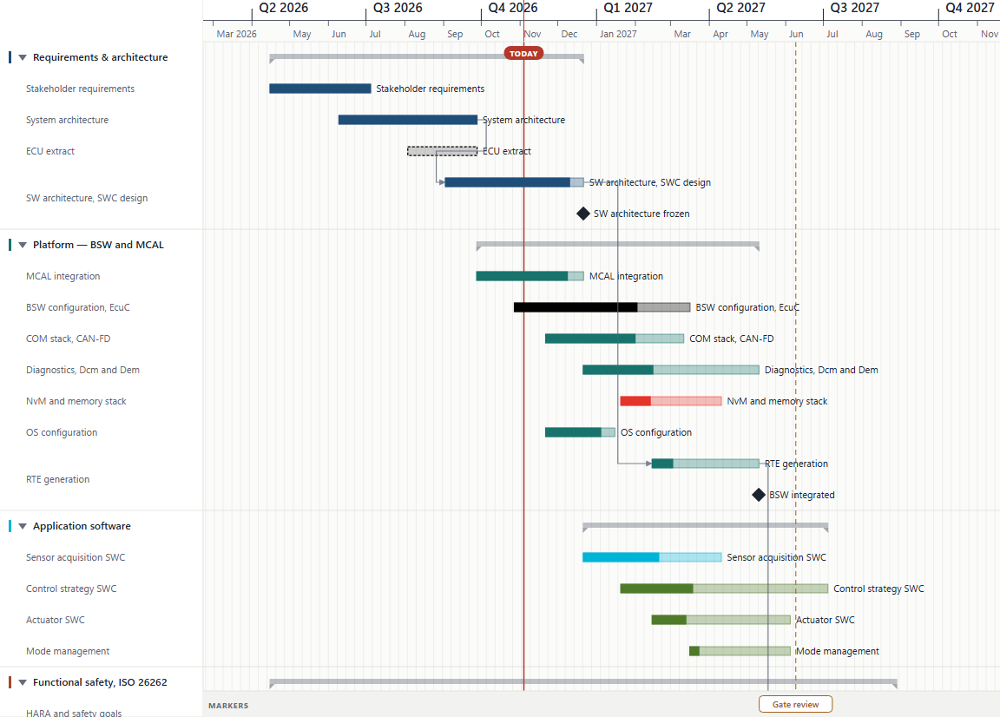
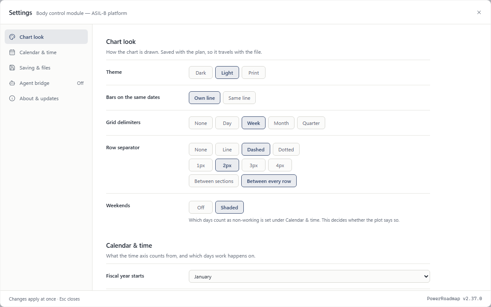
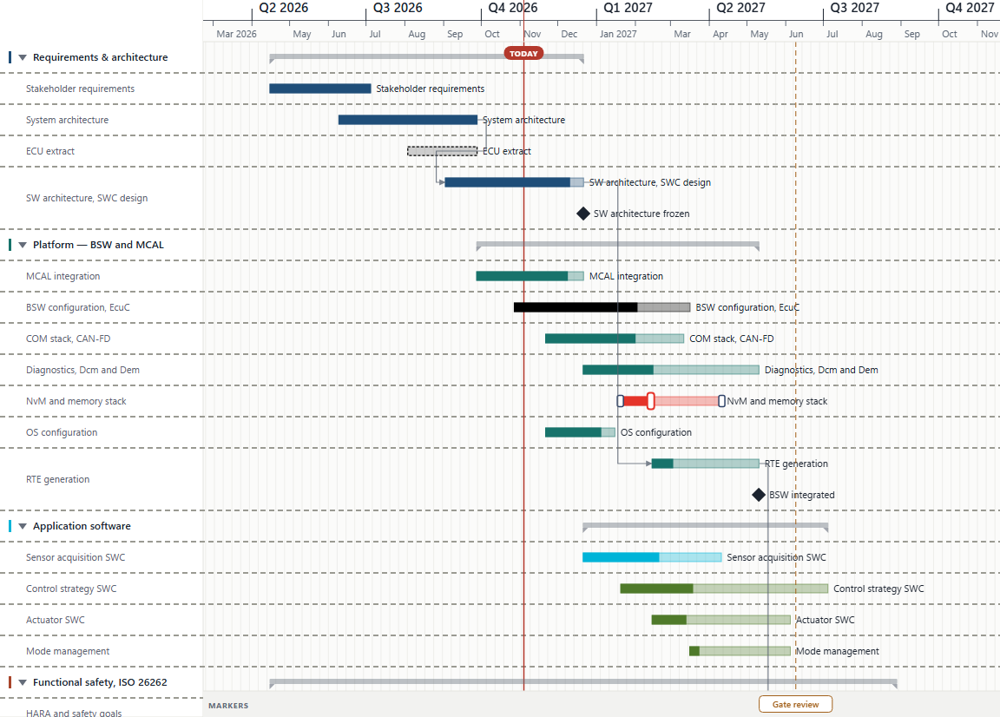
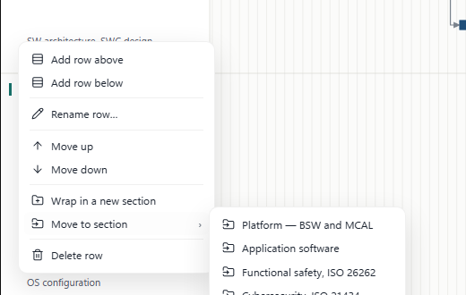
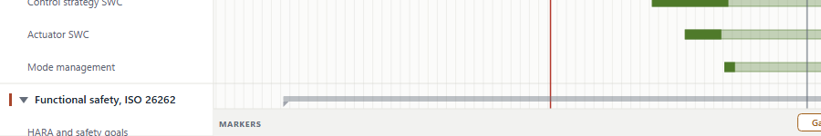
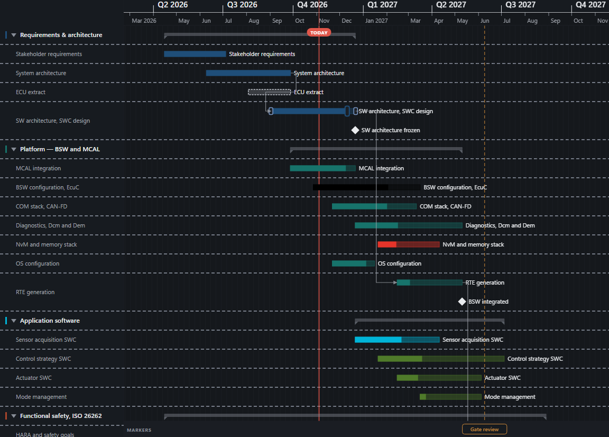

PowerRoadmap v2.37.0 — six asks from the owner, 4–5 November 2026.
"I would like to have one which has no colors, like white — typically it would be like white with dashed black lines. And then fully black. These are the two most important ones."
Both are swatches now. No fill is the first one in the palette, drawn as what it produces: white paper inside a dashed dark frame, so it cannot be confused with a white custom colour — one is a colour, the other is the absence of one. Black is the last preset rather than something to open the custom picker for.
Choosing no fill promotes an absent outline to dashed. A bar with neither fill nor outline is not a style, it is a bar that disappeared. And the frame's default ink is a token, not a literal black, because black on the dark sheet is the same disappearance by another route — it resolves to #000000 in light and print and #E6EAF2 in dark. An outline colour picked by hand always wins.

Eight more presets plus black, for seventeen. The original eight stream hues stay first and unchanged — they are the colours every existing plan was drawn with, and a palette that reorders itself loses a planner their colour. A milestone can now take a colour of its own too: it could be given a label colour but not a colour, so the diamond was stuck at the default while the words beside it were free.
SRS-ELEM-075 · SRS-ELEM-076
"Is it possible to configure an inter-row separator? I would like that separator to have different styles — either a line and I can choose the width of the line, or a dashed line or a dotted line."
None, line, dashed or dotted; one to four pixels; between sections or between every row. The width and the scope only appear once there is a line to apply them to, rather than sitting dead under "None". The dash pattern scales with the width, or a 4px dashed rule is a solid one with a rumour of a gap.


The first working version drew all 38 rules in --color-border-soft, the token the quiet default uses. Measured against the sheet that is 1.23:1 — a planner who went into Settings and deliberately switched on a 2px dashed rule would have got 38 lines they cannot see, and reported the feature as broken. Every test passed. A rule somebody chose now takes its own ink, measured at 2.74:1 in light and 4.25:1 in dark; the untouched default keeps the whisper, so a plan written before the setting existed is unchanged.
SRS-LAY-061
"Instead of having all these, like, moving to, moving to, moving to sections, which makes a very, very large menu, we could have a generic move and then a follow-up. And the entries to add a new row below — usually when I right-click on the entries in the left-side panel, that's because I want to add a new row below."
The menu used to push one Move into "X" per section, so its height was a function of the plan: a programme with a dozen streams opened a dozen near-identical lines. Behind one item they are a list, which is what they always were. One level of nesting only — a second would reintroduce the same wall one step further in.
Add row above and Add row below now lead the menu. They existed only on the chart background, which is the one place a planner is not looking when they want a row next to this one. A new row inherits the clicked row's section, so adding below a row inside Platform lands inside Platform.

A row reorders by dragging it in the row list, by pointer or by finger, with a line showing where it will land. move_row already existed and already carried a section's children with it, so this is an affordance over an operation that worked rather than new document behaviour. The arithmetic is the part worth being sure about: the operation indexes into the rows that remain once the moving ones are lifted out, not into the list on screen — off by one there puts a row one place too far, in the direction nobody notices until the plan is wrong. It is a pure function with seven tests on it.
SRS-EDIT-090 · SRS-EDIT-091
"There is a floating marker band at the bottom that is kind of unusable. It should really be at the bottom of the chart — there shouldn't be anything below. Right now it's floating about 50 pixels above the bottom. And it's hard to move the marker. There is no preview, so I don't really know what I'm dragging. Maybe I can only drag it per week, I don't really know."
Four separate faults, and the owner's "about 50 pixels" was exactly right.
| What was wrong | Why |
|---|---|
| Floating 52px up | A CHROME_H = 52 reserved room for a command bar that floated over the chart's foot. It does not: the command bar is grid-area: panel, its own column. The 52 bought nothing and cost two things — a dead strip under the band, and a plan that could be scrolled 52px past its own end. Measured after: a gap of 0px. |
| "Stuff appears differently" on hover | A marker is drawn as two things far apart — a dashed rule up the plot and a chip at the foot — and each answered the pointer alone, with different cursors (ew-resize and move). The planner met two objects and could not tell they were one. Both now share a hover and a cursor. |
| "There is no preview" | There was, but it rode above the chip at the foot of the chart. Grab the rule near the top of a tall plan and the readout was off screen. It now rides the top of the visible plot, beside the time axis where dates are read. |
| "Maybe per week, I don't really know" | Correct, and never said. snapDelta rounds to seven days on every scale but day. The readout says in steps of a week while the pointer is down. The rule's hit target also went from 10px to 14px. |

SRS-ELEM-077

#E6EAF2 and the chosen row rule measures 4.25:1. A literal black would have been an invisible bar and an invisible rule.What was run, and what it said. The owner asked for a quick release and for only the changed surface to be tested, so this is the affected set rather than the whole suite — named here so the gap is visible rather than implied.
| Gate | Result |
|---|---|
tsc -b --force | clean |
npm test (whole unit suite) | 574 passed, 0 failed, across 72 files — 21 of those tests new here, in 4 new files |
| e2e, the 15 specs this change can reach | 98 passed, 0 failed, on desktop |
| Contrast, measured in the running app | chosen row rule 2.74:1 light / 4.25:1 dark, up from 1.23:1; unfilled bar frame #000000 light, #E6EAF2 dark |
| Marker band, measured in the running app | 0px below the band, down from 52px |
npm run build:template | see the release notes for the built size |
Three e2e tests failed on their first run and all three were the test's fault, not the product's. One asked whether any rect in a bar's group was still filled and caught the selection grips, which are not the bar's fill — fixed by giving the painted body its own hook. One dragged the first row downward, which is a section dropped among its own children, correctly refused as a no-op; it was asserting "something changed" against a case that was right. One asked toBeVisible of an SVG <line>, which has no box, so Playwright calls every rule on the sheet hidden. They are written down because a suite that only ever shows its final green hides the three hours in the middle.
Not run: the tablet and mobile projects, and the eleven e2e specs this change cannot reach. The harness on this machine leaks one WebKit process per browser context until it starves itself, which is on the backlog.